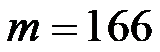
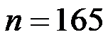
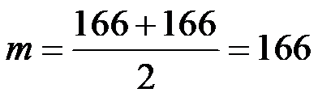
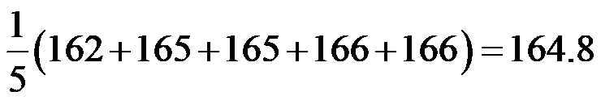
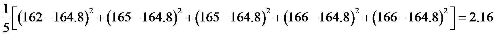
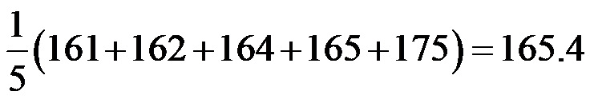
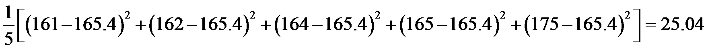
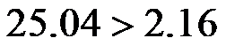
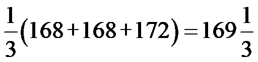

2023年北京中考数学 第23题 解析
23. 某校舞蹈队共16名学生，测量并获取了所有学生的身高（单位：cm），数据整理如下：
a.16名学生的身高：
161，162，162，164，165，165，165，166，
166，167，168，168，170，172，172，175
b.16名学生的身高的平均数、中位数、众数：
（1）写出表中m，n的值；
（2）对于不同组的学生，如果一组学生的身高的方差越小，则认为该组舞台呈现效果越好．据此推断：在下列两组学生中，舞台呈现效果更好的是______（填“甲组”或“乙组”）；
甲组学生的身高 | 162 | 165 | 165 | 166 | 166 |
乙组学生的身高 | 161 | 162 | 164 | 165 | 175 |
（3）该舞蹈队要选五名学生参加比赛．已确定三名学生参赛，他们的身高分别为168，168，172，他们的身高的方差为 ．在选另外两名学生时，首先要求所选的两名学生与已确定的三名学生所组成的五名学生的身高的方差小于，其次要求所选的两名学生与已确定的三名学生所组成的五名学生的身高的平均数尽可能大，则选出的另外两名学生的身高分别为______和______．
．在选另外两名学生时，首先要求所选的两名学生与已确定的三名学生所组成的五名学生的身高的方差小于，其次要求所选的两名学生与已确定的三名学生所组成的五名学生的身高的平均数尽可能大，则选出的另外两名学生的身高分别为______和______．
【答案】（1）

，
； （2）甲组 （3）170， 172
【解析】
【分析】（1）根据中位数和众数的定义求解即可；
（2）计算每一组的方差，根据方差越小数据越稳定进行判断即可；
（3）根据要求，身高的平均数尽可能大且方差小于，结合其余学生的身高即可做出选择．
【小问1详解】
解：将这组数据按照从小到大的顺序排列为：161，162，162，164，165，165，165，166，166，167，168，168，170，172，172，175，
出现次数最多的数是165，出现了3次，即众数，
16个数据中的第8和第9个数据分别是166，166，
∴中位数

，∴，；
【小问2详解】
解：甲组身高的平均数为

，甲组身高的方差为

乙组身高的平均数为

，乙组身高的方差为

，∵

∴舞台呈现效果更好的是甲组，
故答案为：甲组；
【小问3详解】
解：168，168，172的平均数为

∵所选的两名学生与已确定的三名学生所组成的五名学生的身高的方差小于，
∴数据的差别较小，数据才稳定，
可供选择的有：170， 172，
且选择170， 172时，平均数会增大，
故答案为：170， 172．
【点睛】本题考查了平均数、众数、中位数和方差，熟记方差的计算公式以及方差的意义：方差越小数据越稳定是解题的关键．